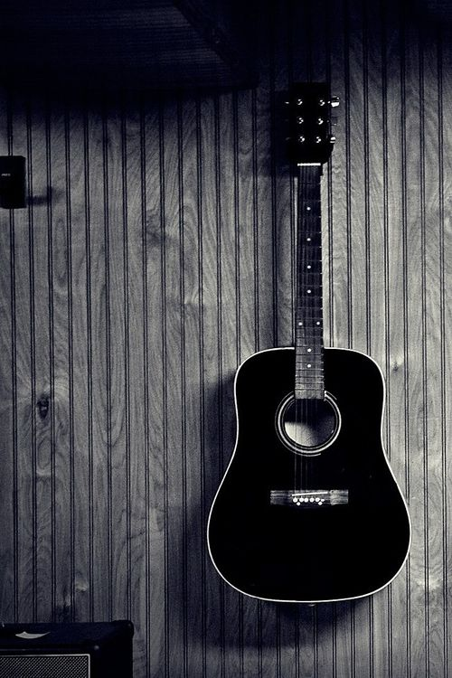

<!DOCTYPE html>
<html lang="en">
<head>
  <title>Bootstrap Example</title>
  <meta charset="utf-8">
  <meta name="viewport" content="width=device-width, initial-scale=1">
  <link rel="stylesheet" href="http://maxcdn.bootstrapcdn.com/bootstrap/3.3.6/css/bootstrap.min.css">
  <script src="https://ajax.googleapis.com/ajax/libs/jquery/1.12.0/jquery.min.js"></script>
  <script src="http://maxcdn.bootstrapcdn.com/bootstrap/3.3.6/js/bootstrap.min.js"></script>
  
   <style>
  .navbar{    
      border: 0;
      border-radius: 0;
      margin-bottom: 0;
      font-size: 12px;
      
      
  }  
  
  .container-fluid{
      font-size: 20px;
      font-family: "Impact";
  }
 
  .row-text-center{
      font-size: 15px;
  }
  

  }
  
 
 
  
  </style>
    
</head>
<body>
    
</body>
</html>


<div class="container-fluid"><nav class="navbar navbar-inverse">
  <div class="container-fluid">
    <div class="navbar-header">
      <a class="navbar-brand" href="index.html">MUSIC PRODUCTION</a>
    </div>
    <ul class="nav navbar-nav">
      <li><a href="R&B.html">R&B</a></li>
      <li><a href="hippop.html">HIP-POP</a></li>
      <li><a href="electronic.html">ELECTRONIC</a></li>
      <li><a href="famousartists.html">FAMOUS ARTISTS</a></li>
    </ul>
  </div>
</nav>

<div class="container-fluid">
  <div class="row">
    <div class="jumbotron">
    <h1><center>MUSIC PRODUCTION</center></h1>      
    <p><center>“People haven't always been there for me but music always has."</center></p>
  </div>


    <div class="row text-center">
      <div class="col-sm-3">
        <div class="beyonce">
          
          <p>R&B stands for Rhythmn and Blues. R&B makes people feel like they are in a jazz club. </p>
        </div>
      </div>
      
       <div class="row text-center">
      <div class="col-sm-3">
        <div class="drake">
          
          <p> Hip-pop usually consist of different types of rap, beats, and dance. 
              Hip-pop usually makes people want to dance and have fun.   </p>
        </div>
      </div>
      
       <div class="row text-center">
      <div class="col-sm-3">
        <div class="MARTIN">
          
          <p> EDM is usually music that makes people feel so pumped up and ready. 
              Each time someone listens to EDM there will always be beat drops.</P>
        </div>
      </div>
      
        <div class="row text-center">
      <div class="col-sm-3">
        <div class="INSTRUMENTAL">
          
       <p>Insturmental usually is what we call instrumental covers. 
           Instrumental covers can make people fix up the original music to something more extraordinary.</p>
        </div>